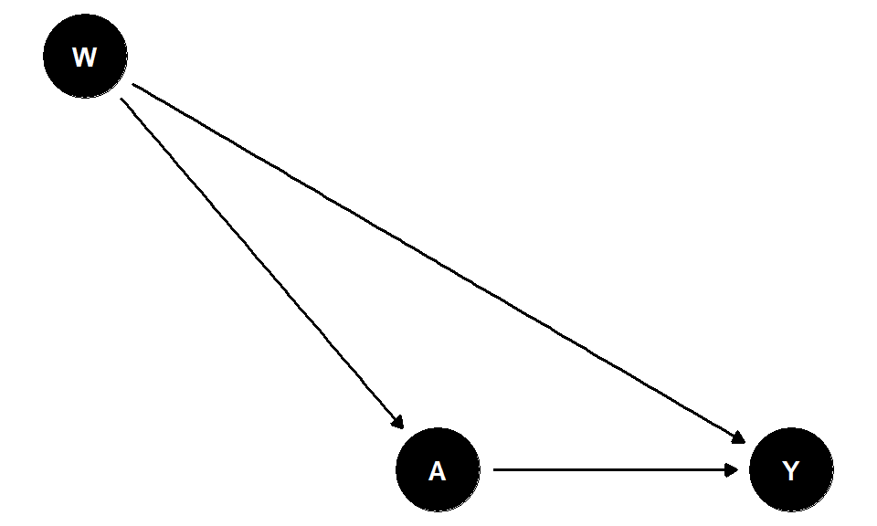

library(tidyverse)
set.seed(2024)
n <- 5000
# --- Data-generating process (NO treatment effect) ---
baseline_hazard <- 0.10 # annual probability of event
max_follow_up <- 5 # years
sim_data <- tibble(
id = 1:n,
will_treat = rbinom(n, 1, 0.6),
time_to_treat = ifelse(will_treat == 1, runif(n, 0, 3), Inf),
event_time = rexp(n, rate = baseline_hazard),
obs_time = pmin(event_time, max_follow_up),
event = as.integer(event_time <= max_follow_up),
actually_treated = as.integer(will_treat == 1 & time_to_treat < obs_time)
)
# --- WRONG analysis: ignore treatment timing ---
wrong_analysis <- sim_data |>
group_by(actually_treated) |>
summarise(
n = n(), events = sum(event),
person_years = sum(obs_time),
rate = events / person_years, .groups = "drop"
)
rate_ratio_wrong <- wrong_analysis$rate[wrong_analysis$actually_treated == 1] /
wrong_analysis$rate[wrong_analysis$actually_treated == 0]
cat("True treatment effect: NONE (null by construction)\n")
#> True treatment effect: NONE (null by construction)
cat("Biased rate ratio:", round(rate_ratio_wrong, 2),
"(expected if no bias: 1.00)\n")
#> Biased rate ratio: 0.44 (expected if no bias: 1.00)4 Chapter 1.2: The Causal Roadmap
Estimated reading time: 40 minutes
In this chapter, we introduce the Causal Roadmap (Petersen & van der Laan, 2014, “Causal models and learning from data: integrating causal modeling and statistical estimation”), a structured approach for asking and answering causal questions with observational data.
Learning objectives
- Describe the six steps of the Causal Roadmap and their purpose
- Formulate a causal question using a target trial protocol
- Recognize immortal time bias, prevalent user bias, and vague comparator bias as failures of target trial thinking
- Draw and interpret a directed acyclic graph (DAG) encoding causal assumptions
- State the three core identification assumptions: consistency, exchangeability, and positivity
- Distinguish a causal estimand from a statistical estimand
- Diagnose positivity violations using propensity score overlap plots
- Explain why pre-specifying an analysis plan before data access reduces researcher degrees of freedom
4.0.1 A motivating disaster: immortal time bias in statin studies
In 2006, several observational studies reported that statin users had substantially lower mortality than non-users, not just from cardiovascular disease, but from cancer, trauma, and even infections. The effect sizes were implausibly large. Were statins a miracle drug?
No. The problem was immortal time bias, a direct consequence of failing to align time zero with treatment assignment:
- Researchers identified patients who filled a statin prescription at some point during follow-up.
- They classified the entire follow-up period as “statin exposed,” including time before the prescription was filled.
- During that early period, the patient could not have died (otherwise they would never have filled the prescription). That time was, by definition, “immortal.”
- Non-users had no such guaranteed survival period.
The result was a spurious survival advantage that had nothing to do with the drug. A structured analytic framework (a Causal Roadmap) would have caught this error at the design stage, before any model was fit.
The core lesson
Immortal time bias arises when time zero is not aligned with the moment of treatment assignment. A target trial protocol forces you to define time zero explicitly, preventing this error before any data are analyzed.
4.0.2 Why Use a Causal Roadmap?
In epidemiology, it is tempting to jump straight to fitting a model: “Let’s run a regression and see what we find.” But this approach conflates the scientific question with the statistical procedure, making it difficult to evaluate whether the analysis actually answers the question you care about. The statin example illustrates a more insidious version of this problem: even before worrying about confounding or model specification, the study design was flawed.
Key point. A causal roadmap ensures transparency in how evidence is generated, separation of scientific questions from statistical methods, clear articulation of assumptions, and structured thinking in both trial and non-randomized settings. Starting with a well-defined question, before touching data or code, is the single most important step in any causal analysis.
This framework is increasingly relevant as real-world data (RWD) enters the regulatory process. Regulatory agencies including the FDA, EMA, and NICE are using RWD to support labeling decisions, external control arms, and post-market surveillance. But RWD analyses face a credibility challenge that trials do not: every analytic decision is made by the analyst, and without a structured framework, it is difficult to distinguish principled analysis from data dredging. The causal roadmap provides that structure. It aligns with ICH E9(R1) estimand thinking, target trial emulation, and the growing consensus that RWE studies require clearly defined estimands, transparent assumptions, and robust inference (Petersen and Laan 2014; Dang, Tager, and Petersen 2023).
Mapping to commonly cited roadmap formulations
This handbook presents the causal roadmap in seven steps (question, model, estimand, identification, estimation, sensitivity analysis, interpretation), following Petersen and Laan (2014). Other formulations exist in the literature:
| This handbook | Petersen & van der Laan (2014) | Dang et al. (2023) high-quality RWE |
|---|---|---|
| Step 1: Define the question | Step 1: Causal model | Step 1: Define causal question |
| Step 2: Structural causal model | Step 2: Target causal quantity | Step 2: Specify causal model |
| Step 3: Define the estimand | Step 3: Identification | Step 3: Define target quantity |
| Step 4: Identification | Step 4: Estimation | Step 4: Assess identifiability |
| Step 5: Estimation | Step 5: Interpretation | Step 5: Statistical estimation |
| Step 6: Sensitivity analysis | (within Step 5) | Step 6: Interpret, sensitivity |
| Step 7: Interpretation | (within Step 5) | (within Step 6) |
The step numbers do not map one-to-one across these formulations. The table shows conceptual alignment, not step-number correspondence. The core logic is the same: separate the scientific question from the statistical procedure, and make assumptions explicit before touching data. The Dang et al. formulation (Dang, Tager, and Petersen 2023) adds explicit data quality assessment and reporting requirements, which we cover in Chapter 3.1 and Chapter 3.8.
4.1 Step 1: Define the Causal Question Using a Target Trial Protocol
In traditional epidemiologic practice, the form of the outcome often dictates the analysis: binary outcomes get logistic regression, time-to-event data get Cox models, and the resulting coefficient is reported as “the effect.” But this approach lets the statistical model choose the estimand for you. A hazard ratio from a Cox model answers a different question than a 3-year risk difference, and neither may correspond to the causal contrast that would actually inform a clinical or policy decision. Step 1 of the roadmap insists that you define the causal question first, before any model is fit.
4.1.1 Start with the target trial protocol
As advocated by Dang, Tager, and Petersen (2023) and Hernán and Robins (2016), a useful way to make the causal question precise is to sketch the target trial protocol, the randomized trial you would ideally like to run, even though you only have observational data. This is a design device, not a claim that every observational study literally recreates a trial. In practice, this means specifying:
- Eligibility criteria: Who would be included?
- Time zero: When would follow-up begin? (This must coincide with eligibility and treatment assignment; see the statin example above.)
- Treatment strategies: What interventions are being compared? (Vague strategies like “statin use” vs. “no statin use” lead to vague causal questions.)
- Assignment procedure: Would treatment be randomized, or are we approximating that contrast with observed data?
- Outcome: What endpoint would be measured?
- Follow-up: Over what time horizon?
- Causal contrast: Risk difference, risk ratio, restricted mean survival time difference, or another estimand?
- Analysis plan: How will confounding, censoring, and missingness be handled?
This prevents a very common problem: starting with whatever variables happen to be available, fitting a model, and only afterward deciding what question was answered. The causal roadmap then translates that ideal question into a defensible analysis by making the causal model, identifiability assumptions, statistical estimand, estimator choice, diagnostics, and interpretation explicit.
Target trial emulation clarifies the causal question. The causal roadmap tells us how to analyze that question rigorously with the data we actually have.
Example:
Among postmenopausal women with osteoporosis who are eligible to initiate either therapy, what is the 3-year risk of cardiovascular events if all initiated denosumab compared with if all initiated zoledronic acid, starting at treatment initiation and followed for 3 years?
4.1.2 Common biases prevented by target trial thinking
Many well-known biases in observational research can be traced to violations of specific target trial protocol components:
- Immortal time bias (violated: time zero): Follow-up begins before treatment assignment. Prevention: align time zero with the moment of treatment assignment using a new-user design.
- Prevalent user bias (violated: eligibility + time zero): Including patients already on treatment at the start of follow-up. These patients are a selected subset who survived early treatment and tolerated it. Prevention: restrict to new (incident) users who initiate treatment at time zero.
- Vague comparator definitions (violated: treatment strategies): “Everyone not on the drug” includes a mix of people on alternatives, people with contraindications, and people who will start later. Prevention: define specific, well-characterized treatment strategies (e.g., active comparator designs).
A unifying insight
Nearly every major bias in observational pharmacoepidemiology (immortal time bias, prevalent user bias, selection bias from conditioning on the future, time-window bias) is a violation of one or more target trial protocol components. If you can specify and emulate the protocol correctly, you prevent these biases by design rather than by statistical adjustment.
4.1.3 Simulation: immortal time bias in action
The following simulation demonstrates how failing to align time zero creates spurious treatment effects. The treatment has no causal effect by construction, but a naive analysis produces a large apparent benefit.
The biased rate ratio is well below 1.0, suggesting treatment is protective, even though the treatment has zero causal effect. The entire “benefit” comes from the fact that treated patients had to survive long enough to receive treatment. No statistical method can fix a fundamentally flawed study design.
4.2 Step 2: Specify the Causal Model
We now draw out how we believe the data were generated. This includes the treatment (A), outcome (Y), and covariates (W), encoded as a directed acyclic graph (DAG) with potential outcomes \(Y(1)\) and \(Y(0)\) for each individual.
A Structural Causal Model (SCM) is simply a formal way of writing down your story about how the world works. Think of it as a set of equations that say: “This variable is caused by these other variables, plus some factors we cannot measure.” For MPH students, the SCM is the mathematical version of the causal DAG you draw on a whiteboard. Each arrow in the DAG corresponds to one of these equations. The key advantage is that it forces you to be explicit about every assumption you are making about what causes what.
The SCM for our example:
\[ W = f_W(U_W),\ A = f_A(W, U_A),\ Y = f_Y(W, A, U_Y) \]
Where \(U\) terms represent unmeasured variables. The corresponding DAG:
dag_roadmap <- dagify(
A ~ W, Y ~ A + W,
exposure = "A", outcome = "Y",
coords = list(
x = c(W = 0, A = 1, Y = 2),
y = c(W = 1, A = 0, Y = 0)
)
)
ggdag(dag_roadmap) + theme_dag()
This DAG implies W (confounders) affect both A and Y, A (treatment) affects Y, and there is no unmeasured confounding.
With the causal model in hand, we can now define exactly what quantity we want to estimate.
4.3 Step 3: Define the Target Causal Estimand
The simplest causal estimand is the Average Treatment Effect (ATE):
\[ ATE = E[Y(1) - Y(0)] \]
Or equivalently, the Risk Difference: \(E[Y(1)] - E[Y(0)]\).
But the ATE is only one option. Depending on the scientific question, we may want a richer contrast:
- Conditional Average Treatment Effects (CATEs): treatment effects within subgroups defined by covariates (e.g., the effect among patients with prior CVD). These are useful for understanding treatment effect heterogeneity.
- Stochastic intervention regimes: instead of asking “what if everyone were treated?”, ask “what if the probability of treatment increased by 20%?” This is more realistic when universal treatment is implausible and avoids positivity violations (see the
lmtpR package and Chapter 3.3b: Adherence Shift Methods). - Dynamic treatment regimes: rules that assign treatment based on a patient’s evolving characteristics (e.g., “start treatment when blood pressure exceeds 140”). These are common in longitudinal settings.
- Optimal individualized treatment regimes: the rule that maximizes the expected outcome for each patient given their covariates. These can be estimated using the
tlversepackage (see Chapter: Optimal Intervention Regimes).
Each of these estimands requires its own identification argument and estimation strategy. This handbook covers all of them. For a roadmap of which chapters cover which estimand, see the handbook overview. We also cover outcome-blind simulation studies for evaluating estimator performance before analyzing real data.
Key point. Why prefer risk differences over odds ratios or hazard ratios? The risk difference directly tells you: “Treatment changes the probability of the outcome by X percentage points.” It is a marginal causal parameter that does not depend on which covariates you condition on.
Odds ratios, by contrast, are non-collapsible (they change when you marginalize over covariates even without confounding), lack a straightforward population-level causal interpretation, and are frequently misinterpreted as risk ratios. Hazard ratios share similar non-collapsibility issues and depend on the proportional hazards assumption.
Additionally, the risk difference is less sensitive to background disease prevalence than ratio measures: the same odds ratio can correspond to very different absolute risk changes depending on how common the outcome is, making ratio measures harder to interpret for clinical decision-making. When your goal is to inform a public health decision, the risk difference answers that question directly.
4.4 Step 4: Link the Causal Estimand to the Observed Data (Identification)
This is the identification step: Can we estimate the causal effect from the data we have?
Identification is the logical argument that, under stated assumptions, an unobservable causal quantity equals something we can compute from observed data. The three key assumptions are fundamentally untestable and must be justified by subject-matter knowledge.
Assumption 1: Consistency (“You Get What You Get”)
The observed outcome equals the counterfactual outcome under the treatment actually received:
\[ Y = Y(A) \]
In practice, this means the treatment is well-defined and there is only one version of it. If someone took denosumab, their observed outcome equals their potential outcome under denosumab. Consistency can break down when “treatment” is vague (e.g., “exercise more”) or when the drug formulation, dose, or route varies across patients in ways that matter for the outcome. The target trial protocol (Step 1) helps protect consistency by requiring well-defined treatment strategies.
Assumption 2: Exchangeability, the Hardest Assumption to Defend
\[ Y(a) \perp A \mid W \]
This is the assumption that there are no unmeasured confounders. After adjusting for the measured covariates \(W\), the treated and untreated groups are comparable, as if treatment had been randomly assigned within strata of \(W\).
- In a randomized trial, randomization guarantees exchangeability by design.
- In observational data, we must assume it holds, and this assumption is untestable from the data alone.
This is typically the most difficult assumption to defend. If there are unmeasured factors (e.g., frailty, physician preference, disease severity scores not in the data) that influence both treatment and outcome, identification fails. Always use a DAG (Step 2) to reason about which variables are sufficient to block all backdoor paths, and conduct sensitivity analyses (e.g., E-values; see Chapter 3.12) to assess robustness to potential unmeasured confounding.
Assumption 3: Positivity (Watch for Practical Violations)
Everyone has a positive probability of receiving either treatment at each level of covariates:
\[ 0 < P(A=a \mid W=w) < 1 \]
Structural positivity violations: Some covariate strata never receive a particular treatment by clinical convention. For example, patients over age 90 may never be prescribed aggressive chemotherapy, or patients with severe renal impairment may be ineligible for certain drugs. No statistical method can fix this. The causal effect is simply not defined in those strata.
Practical positivity violations are extremely common in real-world data: some strata have very few patients receiving one treatment, leading to near-zero propensity scores and unstable estimates. For example, if patients with very low CD4 counts are almost always started on HAART, the propensity score for those patients approaches 1, and the IPTW weight for untreated patients in that stratum becomes very large. Signs to look for: propensity scores piling up near 0 or 1, very large IPTW weights, and g-computation predictions extrapolating far outside the support of the data.
The Key Insight: Replacing Counterfactuals with Observables
Under the three assumptions, the unobservable causal estimand equals a function of the observed data:
\[ E[Y(1) - Y(0)] = E_W\!\left[ E[Y \mid A=1, W] - E[Y \mid A=0, W] \right] \]
In plain terms, this says we can estimate the causal effect by (1) modeling the outcome within levels of covariates and treatment, then (2) averaging those predictions over the covariate distribution in the study population. This is the g-computation identification formula, the foundation for g-computation, IPTW, AIPW, and TMLE.
Causal Estimand vs. Statistical Estimand
A causal estimand is defined via potential outcomes (e.g., 3-year MI risk difference if all patients received denosumab vs. ZA). A statistical estimand is the function of the observed-data distribution that equals the causal estimand under the identification assumptions (e.g., the standardized mean difference from a model of \(P(Y \mid A, W)\)).
Pitfall. Regression coefficients (e.g., log-odds ratios, hazard ratios) are not the statistical estimand for the ATE. They are conditional measures on the wrong scale.
When the identification assumptions hold, the causal estimand equals the statistical estimand. When they do not, there is a causal gap: the statistical procedure targets a quantity that may differ from the causal effect of interest. The causal gap cannot be estimated from data (the violated assumption is untestable), but it can be bounded through sensitivity analysis (Step 6). Better study design, richer covariate measurement, and stronger subject-matter justification all work to reduce the plausible magnitude of this gap.
Positivity violations are diagnosed using propensity score overlap plots and effective sample size calculations. We cover this in detail in Chapter 3.2.
When identification assumptions fail, there is a gap between the causal estimand and the statistical estimand. This causal gap is the difference between what we want to estimate (the causal effect) and what the statistical procedure actually targets (a function of the observed data distribution that equals the causal effect only if the assumptions hold). The causal gap cannot be estimated from data, because the violated assumption is, by definition, not testable. But it can be bounded and subjected to sensitivity analysis (Step 6).
4.5 Step 5: Statistical Estimation
This step translates the identified statistical estimand into an algorithm applied to data. The estimator must match the statistical estimand from Step 4. A logistic regression coefficient, for example, targets a conditional log-odds ratio, not the marginal risk difference identified by the g-computation formula. Using the wrong estimator for the right estimand is a common source of error.
The main estimation approaches covered in this handbook are g-computation (Chapter 2.1), which models the outcome and standardizes; IPTW (Chapter 2.2), which reweights by inverse probability of treatment; and TMLE (Chapter 2.3), which combines both for double robustness. For longitudinal settings with time-varying confounding, these extend to longitudinal TMLE (Chapter 3.9).
When choosing among estimators, the relevant performance criteria are bias, variance, mean squared error, and confidence interval coverage with respect to the statistical estimand. Outcome-blind simulations, where the analysis pipeline is run on data simulated to match the study’s covariate structure but with a known or null treatment effect, can help evaluate estimator performance before outcome data are accessed. This connects to the clean-room workflow in Chapter 3.8.
4.6 Step 6: Sensitivity Analysis
Statistical inference (confidence intervals, p-values) quantifies statistical uncertainty: the imprecision from having a finite sample. But it says nothing about causal uncertainty: the possibility that the identification assumptions are wrong.
When exchangeability, positivity, or consistency fail, the statistical estimand no longer equals the causal estimand. The resulting causal gap means that even a perfectly estimated statistical quantity may not answer the causal question. Sensitivity analysis is the discipline of asking: how large could this gap be, and would it change my conclusions?
Key approaches include:
- Unmeasured confounding sensitivity. E-values quantify the minimum strength of association an unmeasured confounder would need with both treatment and outcome to explain away the observed effect. Quantitative bias analysis models the bias as a function of assumed confounder properties.
- Negative control outcomes. Apply the same analysis to an outcome that should not be affected by treatment. A non-null effect on the negative control suggests residual bias in the primary analysis.
- Bounding approaches. Under partial identification, bounds on the causal effect can be computed without assuming exchangeability holds exactly.
- Outcome-blind simulation. Evaluate the operating characteristics of the estimator (Type I error, coverage, bias) using simulations calibrated to the study data but without access to the real outcome. This allows pre-specification of the analysis pipeline and assessment of whether the chosen estimator is suitable for the data structure at hand. See Chapter 4.2: Outcome-Blind Simulation Studies for a detailed treatment.
We cover sensitivity analysis tools in Chapter 3.12 and diagnostic frameworks in Chapter 3.5.
4.7 Step 7: Interpretation
Once you have an estimate and have assessed its sensitivity, interpretation connects the statistical result back to the original causal question. Ask: are the identification assumptions plausible in this study? What does the estimate mean for clinical or policy decisions? Does it generalize to other populations? No amount of statistical sophistication can rescue an analysis built on implausible assumptions.
The Causal Roadmap is not just a sequence of steps. It is a framework for aligning the causal question, the study design, the identification argument, and the statistical procedure. When all four are aligned, the result is a credible causal estimate. When any one is misaligned, the result may look precise but answer the wrong question.
4.9 Check your understanding
Q1. Why must the causal question be defined before choosing a statistical method?
The causal question determines everything downstream: which variables are confounders (and therefore must be adjusted for), what the target estimand is (e.g., ATE on the risk difference scale vs. a conditional odds ratio), and which assumptions are required for identification. If you choose a statistical method first, say, logistic regression, you have implicitly committed to a conditional odds ratio as your estimand, which may not match the scientific question you actually care about. Starting with the question also prevents “researcher degrees of freedom”: when the estimand is pre-specified, there is less temptation to explore multiple model specifications and selectively report favorable results.
Q2. What is the difference between a causal estimand and a statistical estimand?
A causal estimand is defined in terms of potential outcomes, for example, \(E[Y(1) - Y(0)]\), the average treatment effect. It describes a contrast between hypothetical worlds and cannot be directly computed from observed data without assumptions. A statistical estimand is a function of the observed data distribution, for example, \(E_W[E[Y \mid A=1, W] - E[Y \mid A=0, W]]\). The identification step of the Causal Roadmap shows that, under specific assumptions (exchangeability, positivity, consistency), the causal estimand equals a particular statistical estimand. Without those assumptions, the statistical quantity you compute may have no causal interpretation at all.
Q3. Can covariate balance checks prove that exchangeability holds?
No. Covariate balance checks (e.g., standardized mean differences after weighting) can only assess whether measured covariates are balanced between treatment groups. Exchangeability requires that there are no unmeasured common causes of treatment and outcome, a condition that depends on subject-matter knowledge and cannot be verified from the data. Good balance on observed covariates is necessary but not sufficient: an unmeasured confounder can induce bias even when every measured covariate is perfectly balanced. Balance checks are a useful diagnostic, but they should never be interpreted as evidence that the exchangeability assumption holds.
Q4. A researcher defines “statin users” as anyone who filled a prescription at any time during a 5-year window, and compares their outcomes to never-users. What bias is most likely?
This design introduces immortal time bias. The violated component is time zero. Statin users are classified based on a future event (filling a prescription at some point during follow-up), and their follow-up is counted from before treatment began. The period between the start of observation and the prescription fill date is “immortal” for the treated group, because dying before the fill date would have moved them to the untreated group. This creates a spurious survival advantage. The fix is to align time zero with the date of statin initiation and only compare to controls still at risk at that same time.
Q5. What is a positivity violation, and what should you do when you encounter one?
A positivity violation occurs when certain covariate strata have zero (or near-zero) probability of receiving one of the treatment levels. Structural violations arise when some patients are never treated by clinical convention (e.g., very elderly patients never receiving aggressive chemotherapy). The causal effect is simply not defined in those strata, and no statistical method can fix this. Practical violations occur when some strata have very few patients on one treatment, leading to propensity scores near 0 or 1 and unstable estimates. When you encounter positivity violations, you should: (1) inspect propensity score distributions for mass near the boundaries, (2) consider restricting the target population to the region of overlap, (3) use weight trimming or stabilized weights if using IPTW, and (4) be transparent about the limitations and the population to which your estimate applies.
Q6. How does the target trial protocol connect to the identification assumptions?
The target trial protocol makes identification assumptions concrete. The assignment procedure component supports exchangeability: in the target trial, randomization guarantees it; in the emulation, we must argue that conditional on measured covariates, treatment is independent of potential outcomes. The treatment strategies component supports consistency: well-defined strategies ensure “treatment” means the same thing for everyone, so \(Y(a)\) is well-defined. The eligibility criteria help support positivity: defining the population carefully ensures that within every stratum, there are both treated and untreated individuals.
4.10 What comes next
With the causal question defined, the roadmap laid out, and the identification framework in hand, we are ready to move from design to estimation. Part II introduces the statistical methods that deliver on the promise of this framework, beginning with g-computation (Chapter 2.1), inverse probability weighting (Chapter 2.2), and the doubly robust TMLE estimator (Chapter 2.3).
4.11 Sources and further reading
- Petersen ML, van der Laan MJ (2014). Causal models and learning from data. Epidemiology 25(3):418-426.
- Dang LE, Tager I, Petersen ML (2023). A causal roadmap for generating high-quality real-world evidence. Journal of Clinical and Translational Science 7(1):e127.
- Hernan MA, Robins JM (2016). Using big data to emulate a target trial when a randomized trial is not available. Am J Epidemiol 183(8):758-764.
- Hernan MA, Robins JM (2020). Causal Inference: What If. Chapman & Hall/CRC. Free online
- ICH E9(R1) Addendum (2020). Estimands and sensitivity analysis in clinical trials.
- Suissa S (2008). Immortal time bias in pharmacoepidemiology. Am J Epidemiol 167(4):492-499.
lmtpR package: CRAN
Dang, Lauren E, Issa Tager, and Maya L Petersen. 2023. “A Causal Roadmap for Generating High-Quality Real-World Evidence.” Journal of Clinical and Translational Science 7 (1): e127.
Hernán, Miguel A, and James M Robins. 2016. “Using Big Data to Emulate a Target Trial When a Randomized Trial Is Not Available.” American Journal of Epidemiology 183 (8): 758–64.
Petersen, Maya L, and Mark J van der Laan. 2014. “Causal Models and Learning from Data: Integrating Causal Modeling and Statistical Estimation.” Epidemiology 25 (3): 418–26.